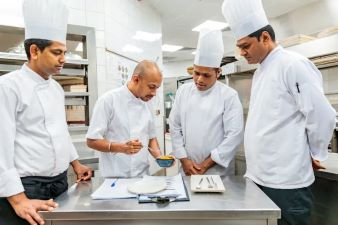

Key Responsibilities:
1. Food Preparation
- Prepping Ingredients: Washes, chops, marinates, and organizes ingredients before cooking begins.
- Plating Dishes: Assembles dishes to the chef's specifications, focusing on presentation and consistency.
- Basic Cooking Tasks: Handles simpler cooking duties such as grilling, frying, or heating sauces.
2. Maintaining Cleanliness and Organization
- Sanitization: Keeps the kitchen area and tools clean to meet health standards.
- Inventory Arrangement: Organizes ingredients and equipment for easy access during service.
- Waste Management: Ensures efficient disposal of kitchen waste to maintain a hygienic workspace.
3. Assisting During Peak Hours
- Stock Monitoring: Notifies the chef or manager when supplies are low.
- Quality Control: Double-checks ingredients for freshness and dishes for consistency.
- Customer Interaction: Occasionally helps explain menu items or handles customer requests.

Impact on the Food Truck:
- Efficiency: Reduces the workload on the head chef, allowing for a faster and smoother operation.
- Customer Satisfaction: Supports the team to deliver high-quality meals on time, enhancing the customer experience.
- Team Morale: A reliable sous chef helps build a supportive and collaborative work environment.
Salary: RM2000/month